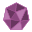

Particle System
Table of Contents
| Particle System | Renders Particle Streams at the given Position in the Hierarchy. | |
| Particle Stream | Provides a stream of particles that can be rendered using a Particle System Node. |
The Particle System Nodes can be used to render a complex simulation of particles in the Ventuz Scene.
Generally a Particle System can consist of any number of streams which will all be calculated and then rendered one after another. Each Stream consists of several Modules which emit, modify and render Particles in a specified order.
List of available Modules
| Emitters | Modifiers | ||
|---|---|---|---|
 Source | Creates a continuous stream of particles. | Directional Gravity | Adds a directional gravity force. |
Secondary | Creates a stream of particles at each position of a particle read from a buffer. | Wobble | Applies simple repeating sine patters to the particles. |
Grid | Creates a rectangular grid of particles. | Noise | Applies multi octave perlin noise to the particles. |
Lissajous | Creates particles on a Lissajous curve. |  Curl Noise | Applies multi octave curl noise to the particles. |
Mesh Vertex | Creates a particle on each vertex of a mesh. |  Point Force | Creates a force towards (positive) or away from (negative) a point. |
Data | Creates particles with parameters given in an array. | Range Force | Creates a force towards (positive) or away from (negative) a point in a given range. |
Path | Creates particles along a given path. | Force | Creates a force towards or away from a point, axis or plane. |
|  Nexus Random | Randomly creates particles inside a primitive volume for Nexus Rendering. | Collision Plane | Creates a Plane that particles will collide with. |
| Renderers | |||
Sprite | Renders billboard aligned sprites as particles. |  Orientate to Path | Defines the 3d-rotation of particles within a path to follow the direction of the path. |
Mesh | Renders the particles as meshes. | Orientate to Velocity | Takes the velocity of an object to determine 3d rotation. |
Mesh Extruder | Renders a mesh along a path created through the particle stream. | Rotate by Euler | Rotates the Particle around its local axes by the given angles. |
| Lines | Renders a line along a path created through the particle stream. | Rotate around Axis | Rotates the Particle around an axis relative to its direction by a specific angle. |
| Surface | Renders Particles as a Mesh Surface. | Rotate Randomly | Rotates each Particle by an individual random amount. |
| Nexus | Renders Particles as Triangles, Edges and Points for Nexus Rendering. | Accelerate | Adds a Force to the particle with a direction relative to its current velocity. |
| Special | |||
Simulation | Is used to create a simulation loop and changes the behavior of most modules. |  Constant Color | Applies a constant color and alpha. |
Simulation Constant Count | Is used to create a simulation loop and changes the behavior of most modules while keeping a constant count of particles. | Gradient | Apply a texture gradient to one of the particle's attributes. |
 Link Out | Writes all particles in a named buffer. | Texture | Takes two attributes and uses them as texture coordinates for a texture lookup. Applies that to a target attribute. |
Link In | Reads particles from a named buffer. | Animation | Takes an attribute, adds some random and/or animation over time to it and applies it to another attribute. |
Repeater | Repeats all particles, applying a transformation to the repetition. | Math | Performs a mathematical operation on two attributes and applies the result to a given target. |
Remap | Remaps an attribute to a given target. | ||
Swizzle | Remaps the Channels of an Attribute to another Attribute channelwise. | ||
Touch | Provides Feedback about the hovered particle and its attributes as well as change one of its attributes. | ||
Data Animation | Uses a data array to modify the particle's attributes. |
Usage
A Particle System must be placed in the scene's hierarchy by using the Particle System Node. It can consist of several Particle Streams. They can be placed either as Property Groups in the Particle System or as Content Nodes and bound to an Input of the Particle System Node.
| Inline Stream | Content Node Stream |
|---|---|
Each Stream consists of several Modules that fall in these categories:
- Emitters create particles
- Modifiers move and modify particles
- Renderers render particles
- Specials modules do more specific things
A useful particle system needs at least one Emitter and one Renderer. Modules can be mixed with minimal limitations, so you can have more than one renderer or additional emitters and animations between renderers.
Each particle system can have multiple Streams of modules, allowing to create more complex systems like a Source Emitter whose Particles work as Emitters themselves.
Properties
Steps Per Frame defines the count of simulation steps that should be performed per frame. This can increase the accuracy of the particle's movement occur in a simulation loop.
With Enable Functional Time Override set to true each functional particle stream will use the Function Time Override to calculate the current Position of each Particle. By default these streams will use the Cluster Clock to calculate the current attributes of each particle.
Reset resets the Particle System and restarts the simulation.
Particle Streams
There are two different types of behaviors of Particle Streams: Simulating and functional Streams. As soon as you place a Simulation Module in a Stream it is handled as a simulating one.
In a Simulating particle system, the particles are moved a bit each frame, new particles are added and old particles are removed as appropriate. This makes it impossible to play backwards or skip into the middle of a scene, but allows for very complex behavior.
In contrast, in a Functional particle system, the position of each particle is calculated from scratch, without knowing any previous position. This allows only for simple movements, but you can move forwards and backwards in time. Both kinds of particle systems will create the same movements each time run, as long as run on the same hardware specs. There is no true random.
Each particle stream can define a Maximum Particle Count to prevent render stalls whenever the logic of the scene emits more particles than can be handled in a frame or simulation step. Lastly you can change the Name of a particle stream. This way you can easier recognize their usage in the particle system node. Inline Particle Streams use a property while Extracted Content Node Streams use the node's name in the Content Editor.
You can disable a particle stream by clicking on the icon and pressing CTRL-B. Or, click the checkmark in the upper left corner of the particle stream properties. These two methods are linked, and changing this will reset the particle system.
To temporarily and dynamically disable a stream, the stream has the disable computation property. This can be bound and changing the value will not reset the particle system.
For the stream to be operational, both the checkmark must be checked and the disable computation property must be off.
Emitters
Continuous particle emitters like "fountains" add some particles each frame while old particles are removed, they work the same in simulating and functional particle systems. With static emitters like grids or lissajous curves, particles have unlimited lifetime. This is OK for functional particle systems. Static emitters in simulating particle systems will create all particles in the first frame and let them fly through the simulation. There are options to create more particles, kill all particles from this emitter, or create a force for each particle to its birth position.
Buffers
Particle Streams can write to or read from a Particle Buffer. This is used to communicate between the Streams inside a Particle System. For example one stream can write each particle's position to the buffer which can be used by another stream as the positions of its emitters.
Some of the most common use cases:
- Rocket Smoke: A Particle Stream can write the position of a rocket particle into a buffer using the Link Out Module. This is read in a second stream with a Secondary Emitter that can emit particles at the current position of the rocket to simulate e.g. smoke.
- Firework: A Particle Stream can fire an event each time a particle dies using the Simulation Loop Module, holding all of its attributes like its position. This can be written to a buffer as well and then used in a second stream on a Secondary Emitter with the help of the Burst property that defines how much particles should be emitted once the event occurs.
- Layer Effects: You can render a particle several times with different renderers. This can either be done in one stream if you just want to add Modules after the first rendering. Or via the Link Out and Link In Modules if you want to also remove e.g. a Noise Effect from the second rendering.
On all use cases make sure that you use the right names for the Buffer Properties they write to or read from.
Paths
Some modules create one or more Paths. These paths can be used to modify particle properties like size and color, or hint rendering. For each module there is a documentation how many paths are created or used. The paths are put on a stack, using a path does not remove it from the stack. Example: you have a Lissajous emitter, creating a path. This will be Path0. Then you have a repeater, creating another path. Now the repeater will be path0, and the Lissajous will be path1. Paths can be open or closed, depending on the module and its parameters. Paths do not work inside the simulation loop since particles can change order inside simulation loops at any time, but after the simulation loop paths can be created, for instance through repeaters.
Nexus
Nexus Rendering allows for the rendering of Triangles, Edges and Points from particles by using the Nexus Renderer. For this, the particles need to provide all necessary information that is only applied by certain emitters. Currently you can use the Nexus Random Emitter and the Mesh Vertex Emitter to set the required attributes.
Basically with the Emitters you have a pre-selection of triangles and edges along the emitted particles that are either created randomly (Nexus Random Emitter) or with the information from a mesh (Mesh Vertex Emitter). On the Nexus Renderer Module you can then select the actually visible Triangles, Edges and Points respectively as well as apply their Material.
Particle Attributes
Each particle can have the following attributes:
| Name | Values | Range | Description |
|---|---|---|---|
| Position | 3 Values (x,y,z) | any | The current position of the particle in the particle system's space. |
| Velocity | 3 Values (x,y,z) | any | The current movement speed in the particle system's space. |
| Color, Alpha | 3 Values (r,g,b,a) | 0..1 | The color of the particle. This will be multiplied with the color defined in the material. |
| Size | 3 Values (x,y,z) | any | This scales the particle along the axes of the particle's space. It will be multiplied with the rendered object's size. |
| Age | 1 Value | 0..1 | Represents the particle's current time in life. 0 is just born, 1 is about to die. |
| Path0 / Path1 | 1 Value | 0..1 | Describes the relative position of a particle along a path. Paths are special attributes in that they also give information about the next and last particle and whether these are connected or not. |
| Sprite Rotation | 1 Value | 0..1 | Will rotate the rendering of a sprite. |
| Animation | 1 Value | 0..1 or indices of loaded animation | Determines the frame of a given Flipbook Loader Animation that should be rendered for this particle. With a Flipbook Control Material Stage you can change the range used to address the different frames of the animation. |
| Amount | 1 Value | any | A single value that can be used by several modules to adjust the strength of their effect per particle. Does not affect the particle directly. |
| Aux0-3 | 1-4 Values | any | Can be used to do any kind of calculation or as a buffer for a value for later usage. Does not affect the particle directly. The number of values changes depending on the type of input given - e.g. if a color is written to Aux, it will have 3 Values, if the age is used, it has 1 Value. |
| Object ID | 1 Value | 0..n, positive integers | Each emitted particle will get the lowest unused Object ID so that each particle has a unique value on this attribute. |
The Simulation Loop
In simulating particle systems, the particles go through a loop, with the particles active at the end of the frame are fed back into the simulation at the start of the next frame. Inside the simulation loop, emitters only add newborn particles and animations only do one step of simulation.
You can have additional emitter and animation modules after the simulation module. Their effect is not fed back.
Renderers are always placed after the simulation module.
Usage of Modules
Most of the times you first add an emitter and a renderer to the stream, so there is something to see. Then add more modules and streams as you need.
Some modules are only allowed in a certain position:
- In a Functional stream
- Inside the Simulation loop
- After the simulation loop
Most modules are allowed everywhere, but some modules come with limitations where they can be placed. In the module description, the letters FSA will tell you where the module is allowed. Example:
FS -- This Module would only be allowed in Functional streams and in Simulation loops but not After a simulation loop.
The Modules are applied to the stream in the order of the Property Group List. Animation and Render Modules are only applied to particles that already exist when they are processed and only regard Animation Modules that have already been processed. Streams as well are computed in the order of the Property Group List - buffers need to be written to before you can read out these attributes.
Emitters
All Emitters have a Transform Property Group. This changes the location of the emitter in the system.
The Identity property group provides the mathmatically neutral matrix.
Manual builds up a matrix depending on the Position, Rotation and Scaling properties that work similar to those of the Axis Node.
Simple Scale defines a uniform scaling on all axes only - this can be used instead of the Manual property group for overviewability of the containing node.
Anchor provides a reference to an Anchor Node whose world matrix is used to overwrite the original world matrix.
Transformation works similar to Manual but you can append an additional Transform Property Group to it. This way you can e.g. add an offset to a given Anchor's position before applying it to the containing node.
Lastly Matrix uses an existing Matrix from the scene's logic.
Note that changing the Emitter's scaling will only change the scaling of the particles positions over time but not it's rendering.
Continuous Emitters
Continuous emitters create a defined amount of particles in each calculation step of the particle system.
Source
| FSA | Creates a stream of particles. |
|---|
This is your basic "fountain" type particle emitter.
Rate defines the absolute number of particles, emitted per second. Amount will control the number of particles per second relatively to Rate, this can be used to easily fade in or fade out particle emission.
You can randomize the Position of birth and the Speed of the generated particles with the Random Position and Random Speed properties. The Random Shape properties change the range of these random vectors: Box generates vectors with each component in the given range - resulting in a box-like alignment of particles. Sphere generates vectors with a length in that range so that particles appear inside a sphere. Bubble creates vectors that point to the surface of a spheroid. Disk ignores the input on the Z-Axis and only creates a randomized 2-dimensional vectors that lie on a disk. Circle also creates a 2-dimensional vector that point to the edge of a circle. Same Random uses the same random number for the position and speed per particle - this will create particles that move away from the center of the emitter if the same Random Shape is used for the speed and position.
The randomization can be controlled with the Limit Random property. It limits the period of the particle emitter to 2(n+1). Set this to 31 for the best possible randomness, lower it to create flawed random that might give you some additional structure. With Random Seed you can additionally change the base seed of the randomization. This can be used to prevent the exact same random numbers on several source emitters with the same settings.
Speed adds an additional offset to the initial speed of the particles.
Lifetime changes how many seconds will pass until the particle dies. Random Lifetime will randomize that value - giving a range around that given value as a percentage. And Jitter randomizes the birth time of particles - the steadiness of the birth of particles is especially visible on low rates and so Jitter can help in these cases.
Trigger Burst immediately emits as many particles as provided in the Burst Property when triggered. Trigger Enable/Disable disable or enable the Emitter. For feedback see the TriggerEnabled Output Property.
Note that Burst is only usable in a simulated particle stream. Although the Enable and Disable Triggers also have an effect in a functional stream, they then kill and generate all particles immediately (even already emitted ones). This is due to the nature of the different kinds of Particle Streams.
Secondary
| S | Creates a stream of particles at each position of a particle read from a buffer. |
|---|
Can be used to emit particles at the positions of the particles of another stream in this system. All properties behave the same as in the Source Emitter.
Link Name changes the used buffer. Buffers can be created e.g. with the Link Out Module.
Additionally the Translate properties can add an offset to the particle's position from the current emitter. Per Particle Amount changes the Rate of each emitter created from the buffer based on its Amount Attribute. This way each placed emitter can emit a different amount of particles. Whenever an Event is fired in the linked buffer, the system will emit as many particles as given in the Burst property for the next simulation step. An event is fired e.g. by the Simulation module. By using Original Speed you can apply the speed (or a multiple of it) of the original particle to the emited particles. Forward From changes how the forward vector of the emitted particles should be determined, you can either use the velocity vector or the forward vector from the buffer.
Static Emitters
In contrast to continuous emitters the static emitters only generate particles once.When used in a simulation loop, all static emitters can use the same properties for lifetime control.
There are 3 modes for this. In Lifetime Mode each particle has a predefined Lifetime. Each time the Trigger event is fired, new particles are emitted. In Manual Kill Mode you can create new particles with the Trigger event and eventually Kill them again. When Auto Kill is enabled Trigger will also kill all existing particles. The Force control moves particles back to their original position by applying a Force towards. You can move particles or the original position to see the effect. If the original position is animated, for instance in Lissajous, the particle will be forced to that new position. The force increases with distance.
When using the Force control you will need some friction in the simulation or things will oscillate terribly.
Grid
| FSA | Creates a rectangular grid of particles. |
|---|
Creates an open path for each X and Y.
The Grid generates particles in a grid formation. You can change the Size of the grid and the particle Count along each axis. Jitter applies a randomization to the position of the emitted particles.
Since the Grid generates paths along both the X and Y Axis, you can choose which attribute to write to with the Path Out X/Y properties.
When loading a Texture, its color will be applied to the particles color attributes based on their X and Y positions. If Alpha Kill is enabled and the Alpha of the textures goes below the Alpha Kill Threshold no particle is emitted at that position.
Lissajous
| FSA | Creates particles on a Lissajous curve. |
|---|
Creates a closed path for the Lissajous figure.
With the Lissajous curve you can create particles along a Lissajous Curve. You can change the number of emitted particles with the Particle Count property.
The Frequency, Phase and Amplitude properties adjust the appearance of the Lissajous Curve. Use integer values for the frequency to create closed curves. Phase can be used to animate and the amplitude scales the curve.
With the Up Vector property you can change the calculation of the up vector of each particle. Each of the two calculation modes might generate artifacts in different situations.
The Lissjous emitter creates a path along the generated particles. With the Path Out property you can change the used attribute for that.
Mesh Vertex
| FSA | Creates a particle on each vertex of a mesh. |
|---|
With the Mesh Vertex emitter you can create a particle on each vertex of a Mesh given by a Geometry Provider Property Group or Node. The Frame property changes the used frame of the used mesh.
Additionally you can write certain properties of each vertex to the emitted particle's Attributes. The Normal can be written to the Forward attribute of the particle - rotating the particles along the surface of the emitting mesh. It can also be written to the particle's Speed so it appears to be emitted away from the surface of the emitting mesh. Using the Speed propety you can control the strength of that effect. With Color to Alpha you can write the color and alpha properties to the corresponding attributes. And with UV to Aux you can read the UV Coordinates of the vertex and write them to the Aux0 and Aux1 attributes of the particle. With this you can e.g. apply a Texture module based on these two attributes. Duplicate Vertices enables the emission of particles with the same position. While turned off, doubles are culled. Turning this off is best used for rendering of transparent sprites but best turned on for rendering of a mesh surface.
Data
| FSA | Creates particles with parameters provided via arrays. |
|---|
Creates an open path along the emitted particles
The Data emitter generates particles that have the properties given in the list of Data Providers. It will create as many Particles as given in the Count property. It writes the Path that it outputs to the defined attribute of the Path Out property.
Data Providers
You can provide the Data Emitter with different kinds of arrays that are freely combinable. The arrays elements are written to the according parameter of each particle. With the Beyond Array property you can change how the Array should be filled if the emitter's Count property is greater than the given array's length. Default will fill it with 0's, Wrap will start with the values at the beginning of the array again, Clamp uses the last value or the last few values depending on the usage (e.g. it uses the last three values of a Color array). Lastly you can just Cut off the Array at that position to not write to the attributes anymore.
- Position: The Particles' Positions, given in XYZ repeating every three elements - [P1X, P1Y, P1Z, P2X, P2Y, P2Z, P3X, ...]
- Position (Single): The Particles' Positions along a single axis.
- Position (Range): The Particle's Positions along a single axis given as the start and end position.
- Position (Arc): The Particle's Positions along an arc. The Arc is given as the start and end position and a curvature around an axis.
- Velocity: The Particle's Velocity, given in XYZ repeating every three elements. Only working in a simulation loop.
- Forward: The Forward Vector, given in XYZ repeating every three elements. This is used to orientate a particle.
- Tangent: The Up Vector of a Particle, given in XYZ repeating every three elements. The second needed Vector to orientate a particle.
- Matrix: Full Translation, Rotation, Scalation Matrix of each Particle, given as Matrix Elements repeating every 16 Elements.
- Color and Alpha Groups: The Color and Alpha Values of a Particle respectively, given in RGB and/or A in a range from 0-255. Groups marked with (float) take a range from 0-1.
- Size: Uniform Scalation.
- Aux: This array writes one value to the Aux Parameter of each particle.
- Multi: All needed Parameters in a single Array - Position is always given in XYZ. Other Parameters can be added using the Attributes dropdown. Color and Alpha use a range of 0-1.
- Range: The same as Position (Range) but it can be mapped on any attribute of the particle.
- Random: Applies random values in a given Range and applies these to an attribute. For this you can adjust the Random Seed.
- Geo Data: Applies longitude and latitde values to the positon of the paricle.
Path
| FSA | Creates particles along a given path. |
|---|
Creates an open path along the emitted particles
The Path Emitter will take a Path from any Path Provider Node and emit particles along it.
In the Path Property Option you can change the used path. It can either load a path directly with the Path Loader or get a path from the scenes logic with a Path Property Property Group.
Particles Count defines how many particles should be emitted along the path. Extent represents the percentage of the path that should be used to emit particles. Mid is the center of that portion of the path. Jitter changes how steadily the particles are emitted.
Since the Path Emitter also writes to the Path attribute of the particles, with the Path Out property you can change which attribute is used for that. Multiple Paths will generate one path along each segment of the path. The next segment starts generating it own path. This is e.g. needed for rendering with a Mesh Extruder renderer so that between the segments the extruder will not draw its tube.
When Multiple Paths is turned on, every segment will emit the same amount of particles - regardless of their lengths. This is because each Path in the Particle System needs to have the same amount of Particles due to technical limitations. This means that shorter segments seem to have a higher density of particles while long segments have only few particles.
Nexus Random
| FSA | Randomly creates particles inside a primitive volume for Nexus Rendering. |
|---|
For more information on Nexus in general have a look at the Nexus Rendering section.
The Nexus Random Emitter creates particles inside a primitive volume randomly. The particles gain all attributes needed by the Render Nexus module to bring Triangles, Edges and Points on the screen.
For this the particles are emitted together with information on
- which 2 particles are connected via an edge and
- which 3 particles form a triangle.
The points as well es the edges and triangles are created randomly while following several rules like the primitive emission shape, maximum distances between points or count numbers. They are explained in the following:
Random Shape defines the shape of the primitive that the particles should be emitted in. Box creates positions on the surface or inside of a box. Sphere is the same but for a spheroid. Bubble only creates positions on the surface of a spheroid. Disk is a 2-dimensional shape with particles spread across an ellipsis while Ring only creates positions on the edge. The Size of all shapes can be changed in each dimension. Their Density defines the distribution of the particles. A density of 1 will contribute particles regularly. A higher density will emit more particles near the center of the shape and a lower density will push the particles towards the edges of the shapes. The Bubble and Ring shapes also have a Thickness that affects the range in which the particles can be positioned around the edges of the shapes. This way the ring will have a torus-like shape.
Point Count defines the number of emitted particles. Seed defines the base for the random numbers generated by this module. If all properties are the same, even the Seed property, the module will emit exactly the same particles on all machines - this is especially useful for cluster rendering.
Edge Flags offers two options for the edge generation. Absolute Count and Relative Count change how the Edge Count property is interpreted. Absolute defines a number of edges for all emitted particles. Relative creates edges relative to the number of particles. Random Any lets the emitter ignore the Minimum and Maximum Distance properties. Random Best Fit on the other hand will search for the nearest particle that is not yet connected and create an edge there. The edge generation will stop prematurely if the Maximum Distance is reached and will ignore particles that are closer to the current particle than the Minimum Distance.
These properties also exist for the generation of Triangles and have the same behavior - as triangles are created through groups of 3 particles instead of 2.
The Maximum Distance property is used as the grid size of a Grid Acceleration Structure. This accelerates the search of nearby particles by restricting it to only adjacent boxes of the grid. Thus, increasing the Maximum Distance will greatly increase the number of tested particles - having a great impact on the performance. Keep this property as low as possible to ensure a fast edge and triangle generation.
Movement Modifiers
These are the animation modules that directly modify position, 3d-Rotation, speed and movement.
Directional Gravity
| FSA | Adds a directional gravity force. |
|---|
The Gravity module will create a directional force given by the GravityX/Y/Z properties. With Amount you can easily scale the resulting vector.
In a functional particle system, the Directional Gravity uses the age of the particle. Since static emitters have no age, this will only work for continuous emitters.
Wobble
| FSA | Applies simple repeating sine patters to the particles. |
|---|
The Wobble Module will apply a sine-formed offset to each particle, based on their position. First, a Scale-Rotate-Translate transformation is done, then the sine is applied. This will give a controlled animation with visible repeating patterns.
Amount can be used to easily fade in and out the effect. It multiplies the Amplitude of the module. Per Particle Amount multiplies the amount of the wobble with each particle's Amount attribute before applying the effect - the impact of the wobble can be controlled per particle this way.
Scale will change the Wobble's sine curves before they are applied while Amplitude changes the impact of the curves on the particles' positions. The Rotate properties change the orientation of the curves - you can e.g. use it to make the repition of the Wobble less noticeable. You can animate Translate to create wave-like effects with the Wobble.
Instead of adding the result to the Position of the Particle you can also write it to the Color or Aux attributes as well using the Target property.
Noise
| FSA | Applies multi octave perlin noise to the particles. |
|---|
The Noise Module will apply a random, continuous offset to each particle, based on their position. First, a Scale-Rotate-Translate transformation is done to the noise, then it is applied.
Like with the Wobble module you can adjust the overall Amount affecting the resulting Amplitude. As well Per Particle Amount will change each particles offset based on the Amount attribute to enable particle-wise control of the effect.
Scale will change the generated noise before it is applied while Amplitude changes the impact of the noise on the particles' positions. The Rotate properties change the orientation of the noise. You can either animate the Translate properties or use the Phase property. The latter works like the fourth dimension of the Perlin noise.
The noise can have several octaves that overlay the resulting noise with higher frequency curves. With Octaves you can control their number. Falloff changes the effect each octave has on the result, it is calculated like follows:
This is how the falloff works:
Octave0 + Octave1 * falloff + Octave2 * falloff * falloff + Octave3 * falloff * falloff * falloff ...
1.0 means all octaves are the same, 0.0 means the second octave is already diminished to nothing. Each octave generates values between -1 and 1. If Absolute is turned on the absolute values of the octaves' results are added together. This leads to more mountain-looking results.
Normally a perlin noise generates values for all axes separately - you can switch the ThreeD property off to only create one value and apply it to all three axes.
Instead of adding the result to the Position of the Particle you can also write it to the Color or Aux attributes as well using the Target property.
Curl Noise
| S | Applies multi octave curl noise to the particles. |
|---|
The Curl Noise applies a Noise to the Particle's Speed so that they are moved in stream-like patterns.
The Amount and Per Particle Amount properties work just like with the Wobble or Noise modules. Amount can be used to fade the effect in and out. Per Particle Amount additionally regards each particle's Amount attribute to enable control over the Curl Noise's effect per particle.
Scale will change the generated noise before it is applied while Sped changes the impact of the noise on the particles' velocities. The Rotate properties change the orientation of the noise. You can either animate the Translate properties or use the Phase property for animation. The latter works like the fourth dimension of the Perlin noise.
The noise can have several octaves that overlay the resulting noise with higher frequency curves. With Octaves you can control their number. Falloff changes the effect each octave has on the result, it is calculated like follows:
Octave0 + Octave1 * falloff + Octave2 * falloff * falloff + Octave3 * falloff * falloff * falloff ...
1.0 means all octaves are the same, 0.0 means the second octave is already diminished to nothing. Each octave generates values between -1 and 1.
Point Force
| FSA | Creates a force towards (positive) or away from (negative) a point. |
|---|
The Point Force attracts or repels particles to/from a given point. The Amount can be used to animate the effect easily by affecting the Force. A positive Force will pull particles towards the given center while a negative value pushes them away. Mode describes the relationship between the force and the distance of the particle. The center can be transformed using the Transform Property Group.
The Identity property group provides the mathmatically neutral matrix.
Manual builds up a matrix depending on the Position, Rotation and Scaling properties that work similar to those of the Axis Node.
Simple Scale defines a uniform scaling on all axes only - this can be used instead of the Manual property group for overviewability of the containing node.
Anchor provides a reference to an Anchor Node whose world matrix is used to overwrite the original world matrix.
Transformation works similar to Manual but you can append an additional Transform Property Group to it. This way you can e.g. add an offset to a given Anchor's position before applying it to the containing node.
Lastly Matrix uses an existing Matrix from the scene's logic.
Range Force
| FSA | Creates a force towards (positive) or away from (negative) a point in a given range. |
|---|
The Range Force creates a force around a point that falls off to a given range. Similar to the Point Force you can control the Amount and adjust its Per Particle Amount to control each particle's effect with its Amount attribute. A positive Force means attraction and a negative one results in repulsion. The Transform again defines the origin of the force.
The Identity property group provides the mathmatically neutral matrix.
Manual builds up a matrix depending on the Position, Rotation and Scaling properties that work similar to those of the Axis Node.
Simple Scale defines a uniform scaling on all axes only - this can be used instead of the Manual property group for overviewability of the containing node.
Anchor provides a reference to an Anchor Node whose world matrix is used to overwrite the original world matrix.
Transformation works similar to Manual but you can append an additional Transform Property Group to it. This way you can e.g. add an offset to a given Anchor's position before applying it to the containing node.
Lastly Matrix uses an existing Matrix from the scene's logic.
Range defines the maximum distance of an affected particle. If outside of the range the force does not have any impact on a particle. Gamma changes the falloff of the Force towards the range's end. If Scale Force With Range is true then the force will be reduced depending on the distance of the particle to the center.
If Scale Force With Range is turned on and this module is used in a Functional System, you can set, Gamma to 1 and the Force to -1 to move each particle exactly to the edge of the range.
Force
| FSA | Creates a force towards (positive) or away from (negative) a point, plane or axis. |
|---|
The Force module is a generalization of the Point Force and Range Force and is thus capable of creating the same results as they do.
Amount, Per Particle Amount and Position work exactly the same as in the other force modules. You can change the Shape of the force to either a Point, an Axis or a Plane. The force's vector will always be the shortest vector towards the origin's shape. The Axis shape has an additional option Tangential - if set to true the force's vector will instead be the tangent around the axis.
The Tangential option of the Axis shape can e.g. be used to create a Vortex-like effect on your particles.
Constant Force applies a force to all particles regardless of their distance to the origin while Amplify Force is depending on it. The Falloff changes the curve of the decrease of the force. If the Particle is within Minimum Distance no force is applied at all - this can be used to prevent particles from sticking to the origin.
The Force module can be run in Range Mode or in normal mode. If in Range Mode the force will not be applied to particles further away than the given Range. Similar to the Range Force module you can Scale Force With Distance.
When not in Range Mode you can change the Distance Bias. It defines an offset to the forces distance - instead of being e.g. pulled towards the original point of the force the particles will instead be pulled towards a sphere around that point. With Random Distance Bias you can add an additional random bias around it.
All forces with their shapes, biases, random biases and ranges are visualized in the Renderer Window if its Show non-render objects option is enabled. This might help a lot orienting while creating any kind of force.
Collision Plane
| S | Creates a Plane that particles will collide with. |
|---|
Fires an Event in a given Buffer.
Whenever a particle collides with the plane created by the Collision Plane module they will be either Killed or Bounced off, adjustable in the Mode property. The Center defines the pivot of the plane while the Inclination and Azimut affect its rotation. Invert rotates the plane by 180°.
Whenever a particle collides with the plane and the Event Enable flag is turned on, an event is written to the Buffer given in Event Name. You can use that event in another stream - e.g. with the Secondary Emitter's Burst property.
The Event will only be fired when used together with a Link Out Module or Simulation Module.
Orientate to Path
| FA | Defines the 3d-rotation of particles within a path to follow the direction of the path. |
|---|
Reads a path (open or closed).
The Orientate to Path module is used to orientate the particles along the tangents of a path. This is especially useful when rendering the path with a Mesh Extruder to make the tube a lot more consistent than with otherwise rotated particles.
Orientate to Velocity
| FSA | Takes the velocity of an object to determine 3d rotation. |
|---|
The Orientate to Velocity module is used to orientate the particles along their velocity vectors.
Velocity is only known in simulation, and this module is applied after the simulation loop. In a functional system, there is a hack that allows this node to be used with the emitter source and directional gravity.
Rotate by Euler Angles
| FSA | Rotates the Particle around its local axes by the given angles. |
|---|
The Rotate by Euler Angles module can be used to rotate particles in the 3D space. Like with an Axis you can apply a Rotation around each Axis relative to the current orientation of the particle. The rotation will be applied to all Particles.
With the Speed and Random Speed properties you can add a change over time as well. Amount scales the strength of the rotation and Random Amount adds a random offset for each particle.
If Per Particle Amount is turned on, each change in rotation will be scaled with the particle's Amount attribute. The Order lets you change how to apply the resulting rotation matrix.
Rotate by Axis and Angle
| FSA | Rotates the Particle around an axis relative to its direction by a specific angle. |
|---|
The Rotate by Axis and Angle module can be used to rotate particles in the 3D space. You can define an Axis that you want to rotate around by creating a vector starting from the particle's center. The axis is spanned relatively to the orientation of each particle.
The Speed and Random Speed properties allow you to change the rotation over time. Amount scales the strength of the rotation and Random Amount adds a random offset for each particle.
If Per Particle Amount is turned on, each change in rotation will be scaled with the particle's Amount attribute. The Order lets you change how to apply the resulting rotation matrix.
Rotate Randomly
| FSA | Rotates each Particle by an individual random amount. |
|---|
The Rotate Randomly module can be used to rotate particles in the 3D space. Each particle will be rotated by an individual random amount. Amount scales the strength of the rotation.
If Per Particle Amount is turned on, each change in rotation will be scaled with the particle's Amount attribute. The Order lets you change how to apply the resulting rotation matrix.
Accelerate
| S | Adds a Force to the particle with a direction relative to its current velocity. |
|---|
The Accelerate module adds a force to each particle in their space. The Force properties define the strenth of the force in all its axes. Amount can easily fade in and out that effect. Per Particle Amount will further change the strength of the effect, based on the Amount attribute of the particle - this gives particle-wise control over this effect.
Brake applies a decrease of velocity in each simulation tick. If enabled Randomize applies a random offset to the force defined through Random Sideways and Random Upwards.
Attribute Modifiers
These are the animation modules that modify attributes like color, size and sprite rotation that do not effect position and movement.
In a functional particle system, multiple modules multiplying to the color will have the result of mixing the color as expected. In a simulation loop, a color change will be applied each frame, washing out the color rapidly. Note the Operation Properties to adjust for that.
Most of the Attribute Modifiers use Source and Target attributes of the particle. Their usual ranges go from 0 to 1}. You have different options for sources and targets:
Sources
- Null always uses the value 0 for each particle.
- One always uses the value 1 for each particle.
- Age reads the normalized lifetime - just born particles have an age 0 while currently dying ones have 1.
- Path0 and Path1 interpolate between 0 and 1 along a path generated by another module.
- Color reads all three color channels. If you only need one channel you can define that in the Channel property.
- Alpha uses the current Alpha attribute of the particle.
- Color+Alpha reads all of the above channels and uses these.
- Amount reads the amount attribute.
- Size uses the current scaling of the particle. You can either use all scaled axes or define a single axis' scaling to read from. Also you can add a scaling to the output value to fit it to your current usage.
- Sprite Rotation returns the screen space rotation of each particle going from 0 to 1.
- Velocity reads the speed. Scaling from 0 to 1 once the Max Speed is reached.
- Animation reads the animation attribute of the particle.
- ObjecId/ uses the ID of the current particle.
- Aux0-3 uses one of the 4 auxillary channels.
- Random generates a random value for each particle. You can change the Random Seed to a value between 0 and 31.
- Time uses the Particle System's current time. This is usually the Cluster Clock. In a functional system, if EnableFunctionalTime of the Particle System is enabled it will use its FunctionalTimeOverride property instead.
- Position uses the current offset from the particle system's origin. You can define which Axis you want to use and adjust the Scale of this reading.
- Constant defines a custom value that is used for each particle.
- Point Distance calculates the distance to a given point via the Center properties. You can scale the output with the Size property.
- Axis Distance uses the distance of a particle to a given axis. Its pivot is given through the Center properties, its rotation via Yaw and Pitch. Size again changes the scaling of the output.
- Plane Distance reads the distance of each particle to a given plane. The plane's pivot is given by the Center properties, its rotation via Yaw and Pitch. The Mode can be changed between a One Sided calculation and a Mirrored calculation. The output can be scaled using Size.
Targets:
- Color writes to the color channels of the particle. If a scalar is used for this, all channels are affected.
- Alpha writes to the alpha attribute.
- Color+Alpha writes to both, the color channel and the alpha attributes. If a scalar is used for this, all of them are affected.
- Amount writes to the amount attribute.
- Size writes to the size attribute. With Axis you choose which axis to affect. If using a Scalar you can use Uniform to write the same value to all axes. RGB->XYZ writes a vector of three values to the axes' values.
- Sprite Rotation affects the screen space rotation if the particles are rendered as sprites.
- Animation changes the animation attribute used for particle wise texture animations.
- Position affects the current position of the particle. You can change the affected Axis. Here you can choose to write a vector with three values to all axes by using the RGB->XYZ option. These options are available as World Positions (relative to the Partcle System's origin) or Local Positions (relative to the Particle's position and rotation).
- Aux0-3 will write to one of the auxillary channels. If you write a scalar to it, they will from now be handled as a scalar, if using a vector the auxillary channel is used as a vector.
Gradient
| FSA | Apply a texture gradient to one of the particle's attributes. |
|---|
The Gradient module uses a particle's attribute, defined in Source, to look up in the given Gradient texture along its V coordinate. The result will be written to the defined Target attribute.
If the Target attribute is a Scalar only the red channel of the texture is used.
Using the Amount you can interpolate the Target attribute's value between its original value (0%) and the modified value (100%).
With Stretch you can scale the gradient defining the count of its repititions. You can define whether to Wrap or Clamp at the borders of the texture and you can change the Offset. Operation changes the function that is used to write the sampled value to the existing attribute. Default uses the usual operation for the chosen Target. You can change that to Overwrite, Addition or Multiplication.
Texture
| FSA | Takes two attributes and uses them as texture coordinates for a texture lookup. Applies that to a target attribute. |
|---|
The Texture module works similar to the Gradient module. The difference is that Texture will look up along the U and V coordinates of a texture instead of only the V coordinate.
The Texture property group option changes the used texture. Amount interpolates the Target attribute's value between its originial value (0%) and the modified value (100%).
The sources of the lookup can be changed with the TextureU and TextureV properties. Also you need to define a Target.
With the Scale, Rotate, Translate and Pivot properties you can change the 2D transformation of the used texture. Wrap changes the behavior of the texture at its borders - you can either Clamp or Wrap.
Lastly you can Remap the output of the module to adjust it to the target attribute.
Animation
| FSA | Takes an attribute, adds some random and/or animation over time to it and applies it to another attribute. |
|---|
This module is best understood with the Age attribute as source.
The Animation module can be used to add a random and/or time dependent offset to an attribute (Source) and apply it to any other attribute (Target). The Amount then interpolates between the original value (0%) and the modified value (1000%) of the target attribute.
Base adds an offset to the target that is independent from the source and is constant along all particles. Base Random adds a randomized value unique for each particle. Speed and Speed Random add a constant or random value respectively that are multiplied with the source. Finally Time and Time Random do this depending on the current time. Once an output of 1 is reached it will start over at 0.
Lastly you can change the Operation that is used for the application to the target value. Default uses the usual operation for the chosen Target. You can change that to Overwrite, Addition or Multiplication.
One usage is to apply a random rotation to each particle. Choose One as Source and Sprite Rotation as Target and adjust the Time Random Parameter.
Constant Color
| FSA | Applies a constant color and alpha. |
|---|
The Constant Color module simply adjusts the Color and Alpha attributes of each particle. Amount changes the strength of that effect, interpolating between the original (0%)and the modified value (100%).
This will be the same for all particles, but can be animated from frame to frame.
Remap
| FSA | Remaps an attribute to a given target. |
|---|
Reads a value from a given source attribute and applies it to another target attribute, while remapping it from the input range to the output range. Amount changes the value of the target attribute between the original and the new value. Source defines the attribute to read from and Target describes the one to write to. Operation changes the used function to write the result to the target attribute. Default uses the usual operation for the chosen Target. You can change that to Overwrite, Addition or Multiplication.
The Map Input properties change the range of the input values while Map Output changes define the output range. With the Function you can define the interpolation between the MapOutputMin and MapOutputMax properties. There ae different types of functions that you can choose from:
- Linear creates a linear interpolation from Min to Max without clamping or wrapping.
- Linear Clamped uses a linear interpolation while using the Min and Max values if the result is lower or higher.
- Linear Wrapped uses linear interpolation starting from Min once Max is reached.
- Ease In uses an easing function with small slope near Min and great slope near Max
- Ease Out uses a function with a great slope near Min and a small one near Max
- Ease In Out uses a function with small slopes near Min and Max and a high slope in the middle
- Gamma creates a power function with the exponent given in Gamma.
- Sine creates a simple sine curve, starting and ending in the middle of the Min and Max values.
Math
| FSA | Performs a mathematical operation on two attributes and applies the result to a given target. |
|---|
The Math module reads a value from two given Source attributes, uses them for a calculation and applies its result to another Target attribute, remapping it with the given parameters. Amount changes the value of the target attribute between the original and the new value. Operation changes the used function to write the result to the target attribute. Default uses the usual operation for the chosen Target. You can change that to Overwrite, Addition or Multiplication.
The Function is the operator that is used for the calculation with the two sources:
- SelectA ignores SourceB completely and just uses SourceA.
- SelectB ignores SourceA completely and just uses SourceB.
- Add uses an addition.
- Sub results in a subtraction of SourceB from SourceA.
- Mul is a multiplication.
- Div uses a division of SourceA by SourceB.
- Mod's result is the remainder of the division of SourceA by SourceB.
- Pow results in SourceA raised to the power of SourceB.
The Map Output properties can be used to scale the result to the proper range. Clamping enables you to choose to either Clamp or Wrap or do None of them whenever the output value exceeds the limits.
Swizzle
| FSA | Remaps the Channels of an Attribute to another Attribute channelwise. |
|---|
The Swizzle node can be used to rearrange the Channels of an Attribute. You can read all Channels of one Source Attribute and then write its values to another Destination Attribute in another order. For example you can take the RGB values of the Color attribute and write them to the particle's Position in the order BRG.
The order can be chosen either with a Simple dropdown or if these options are not enough you also have the Advanced mode. With the latter you can chose the source channel for each of the channels of the destination attribute.
Touch
| FSA | Provides Feedback about the hovered particle and its attributes as well as change one of its attributes. |
|---|
The Touch module allows for interaction with the particle system. It provides feedback about the last hovered particle. This can be done by changing a Particle's Attribute as well as providing Ouput Properties.
You can change the color with the Hover To Color Alpha property. It will apply the Hover Color and Alpha to the hovered particle with the given amount. With Hover and Touch To Attr you can write the information if a particle is currently hovered or touched to the /corresponding attribute.
When a particle is clicked you can also fire an event in a buffer. This can be used to e.g. emit particles on a Secondary Emitter in another stream whenever a particle is clicked. For this you will need to add Link Out Module as well and define its name in the Click Event Name property. With Click Event Enable you can turn the event emission on and off.
You can pass information on the hovered particle outside the Particle System as well by using its Output Properties. Touch Inside and Pressed return whether the current touch point is hovering a particle and whether it is pressed (maily used for mouse interaction). The Events Touch Enter, Leave, Begin and End fire respectively to the change of these flags.
PosX, Y and Z return the position of the Particle in the world space. This can be changed to the Particle System's local space with the Local Position input property. Feedback Value defines an attribute of the hovered particle that you want to use in the Outputs of the Particle System.
Finally there are options to adjust the selection of the hovered particle. You can disable the module temporarily with the Disable Touch property. The Scale changes the size of the particles for the interaction - when set to 1 it is simply using each particle's size property. Which changes the preferred particle if several are hovered. Any will chose the one that is first found by the shader code. Frontmost selects the one that is nearest to the camera, and Nearest chooses the Particle that has the smallest distance to the touch point.
Note that the Frontmost and Nearest need the Particle System to create another shader and therefore have a higher impact on the performance then the Any option. See the Debugging and Performance section for more.
Data Animation
| FSA | Uses a data array to modify the particle's attributes. |
|---|
The Data Animation module applies the value of an array to each particle in a stream depending on one of their attributes - similar to the Data Emitter that applies these values only on their creation.
With the Source property you can define which attribute of the particle determines the used array element. The ParticleNr is the current number of the particle in the particle system - this can change in between frames, especially when using a Source Emitter. ObjectId is stable across frames since each particle has a unique ID. Lastly you can also use the Aux or Path properties.
You can change the Position, Size, Color, an Aux attribute, the Sprite Rotation or Animation with this module. The used attribute is defined by the Destination property. The Operation that is used for this process can be set to Add, Subtract, Multiply or Set.
The Overrun property changes how to handle arrays with less elements than there are particles. Ignore does not apply anything to the particles, Clamp applies the last value of the array and Loop starts at the beginning once the end of the array is reached.
Renderers
All Renderer Modules have one or more Material Property Groups which give the option to add a Material to the rendering of only one Module. This Material will be appended to whatever Material is applied to the Particle System via the Hierarchy. This means it will by default inherit all options of the Hierarchy Material Node and only overwrite those that are defined in the Material Property Group. A Material can also be applied to such a Property Group via a Content Node Material Provider.
Sprite
| FA | Renders billboard aligned sprites as particles. |
|---|
The Sprite module renders billboarded textures on the screen. The module can hold a Material Definition. By default a Sprite Renderer has a Material with a No Light lighting model, a Texture Loader material stage, a Linear Dodge alpha blending and a z-testing option to Not Write anything to the z-buffer.
You can adjust the uniform Scale of the sprites as well as change their Aspects. The aspect is calculated with the formula 2x. So if you need an Aspect of 16:9 you need to type 0.83 (which is log2(16/9)). If you need an aspect of 9:16 it simply is -0.83.
The Offset properties add a translation of the sprites to their particle's positions in screen space. You can fade out the sprites when they come near the camera by using the Z Near Fadeout Enable and Z Near Fadeout properties.
Sorting lets you apply a sorting algorithm to the particles for this rendering. There are different options to choose how the particles should be sorted. Depth sorts them using the distance to the camera. Distance sorts them using the distance to the particle system's origin, and Age sorts them using the particles' age. With the Reverse flag you can change the direction of sorting. Sort Precision hanges the number of executed passes. For example 5 Bit has 1 sorting pass only regarding the 5 most significant bits. 15 Bit has 3 passes and regards the 15 most significant bits. Turn the precision down to save performance and turn it up if you see a lot of Z Sorting artefacts in your particle system - but most of the times the default value of 15 Bit should be fine.
Culling is adjustable for the sprites' front- or backfaces or none of both.
You can change the direction of Billboarding:
- Toward Camera: Align the sprites towards the camera.
- Along Forward: Rotate along the Forward Vector of the particle.
- Along Speed: Rotate along the Velocity of the particle. Normally this only exists after a simulation.
- Along Direction: Use Billboard Reference to create a Rotation Vector to which the particles will be aligned.
- Toward Position: Rotate towards a Position given through the Billboard Reference.
- Toward Axis: Rotates towards an Axis defined in the Billboard Reference
- Normals Toward Position: Only changes the normals' directions towards a position but leaves the rotation of the particle as it is.
- Normals Toward Axis: Only changes the normals' directions towards an axis but leaves the rotation of the particle as it is.
- Invert: Can be used to invert the resulting vector. Only applies to Toward Position and Toward Axis billboarding.
- Update Normal: When directions are changed in any modifiers in the particle system the sprites normals need to be updated during the rendering. Turn this off if you want to keep the original direction of the particles' normals.
The Billboard Reference uses a Transformation property group. Alignment enables you to choose which axes are locked to the billboarding. The VR option locks the X and Y axes and is useful for cameras that have an animated roll.
The Identity property group provides the mathmatically neutral matrix.
Manual builds up a matrix depending on the Position, Rotation and Scaling properties that work similar to those of the Axis Node.
Simple Scale defines a uniform scaling on all axes only - this can be used instead of the Manual property group for overviewability of the containing node.
Anchor provides a reference to an Anchor Node whose world matrix is used to overwrite the original world matrix.
Transformation works similar to Manual but you can append an additional Transform Property Group to it. This way you can e.g. add an offset to a given Anchor's position before applying it to the containing node.
Lastly Matrix uses an existing Matrix from the scene's logic.
Mesh
| FA | Renders the particles as meshes. |
|---|
The Mesh module renders a mesh on the positions of the particles. You can change the used Mesh using the according property group option. See Geometry Provider Node for more information on the usage of these property groups. With the Transform property group you can append a matrix to the particle's position, rotation and size. Lastly you can add a Material Definition to the renderer that is applied to all rendered geometries.
Sorting lets you apply a sorting algorithm to the particles for this rendering. There are different options to choose how the particles should be sorted. Depth sorts them using the distance to the camera. Distance sorts them using the distance to the particle system's origin, and Age sorts them using the particles' age. With the Reverse flag you can change the direction of sorting. Sort Precision hanges the number of executed passes. For example 5 Bit has 1 sorting pass only regarding the 5 most significant bits. 15 Bit has 3 passes and regards the 15 most significant bits. Turn the precision down to save performance and turn it up if you see a lot of Z Sorting artefacts in your particle system - but most of the times the default value of 15 Bit should be fine.
Mesh Extruder
| FA | Renders a mesh along a path created through the particle stream. |
|---|
The Mesh Extruder generates a mesh along a path that was created by other modules. You can change its appearance with the Profile property group option.
The Tube property group defines a pipe-like extrusion of the given path.
Diameter is the size of the extrusion, Tesselate defines the resolution of the extrusion ring. With the Mode you can define the type of the used surface - Edged will create straight edges, Round creates a continuous surface. The bevel modes will create an edged surface with straight (EdgedBevel) or round (RoundBevel) corners. BevelSize changes the amount of each side of the tube that should be part of the bevel.
ScaleTextureU,V changes the scaling of the UV coordinates of the Tube.
Material and CapMaterial define the according Materials.
Tesselate changes the tesselation along the extrusion while Max Segment limits the maximum number of tessels. Interpolation changes the type of interpolation between the particles - you can choose from Linear and Cubic. When Twirl from Amount is enabled the profile will be rotated based on the Amount attribute of the particles.
You can repeat the rendering of the extrusion along particles in a buffer by providing it with a name in the Repeater property. Since the Repeater puts a Path on the Stack you cannot repeat the rendering of the Mesh Extruder with it and thus you need to use particles from another stream.
You can use the Slicer property group option to enable a slicing of the extruder. Segment changes the number of segments along the extrusion. The Percentage property defines the length of each segment. You can start the slicing at a different position along the extrusion with the Offset property.
With Middle Mesh you can generate a mesh that will be rendered along the path. In its property group you can define a Mesh, a Transformation Matrix and a Material. Lastly the Step property changes the distance between the meshes along the extrusion.
First and Last Mesh can be used to add a Material to the beginning and end of the extrusion as well. Their options work the same as the ones of Middle Mesh.
Lines
| FA | Renders a line along a path created through the particle stream. |
|---|
The Lines module creates a 2D line along a given path. This will use a rendering technique similar to the one of the Path Renderer Node.
This module holds a Material definition. Here you can change the Line Options. In the material you can also choose to render e.g. as Path.
Surface
| FA | Renders Particles as a Mesh Surface. |
|---|
The Surface module renders particles as a surface if they hold information necessary for that. Currently you can apply the needed information to the particles' attributes using the Mesh Vertex Emitter. You can apply a Material to the rendering using the corresponding property group.
Note that the Surface renderer currently does not support lighting models other than No Light. This is because the particle system currently does not correct the normals of emitted polygons before rendering. You can set the Normal to Forward flag on the Mesh Vertex Emitter to enable some lighting but it is not handled correctly at all.
Nexus
| FA | Renders Particles as Triangles, Edges and Points for Nexus Rendering. |
|---|
For more information on Nexus in general have a look at the Nexus Rendering section.
The Nexus Module renders Triangles, Edges and Points, when particles have the required information as described in the Nexus Rendering section.
The rendering of the nexus objects cannot be sorted like the Sprite Renderer does. So you have to be careful with transparent objects that use e.g. the Normal blending mode that relies on the sorting of objects to work properly.
The module will give you options to select which particles to render for triangles, edges and points each. Each particle will be assigned a value that represents the amount with which it should be drawn. You can completely disable the rendering of one group by disabling the corresponding Property Group or set the Disable Rendering flag in the Flags property. The Amount To Color flag multiplies the selection of each particle with the selected value determined throgh the Selector property groups. The Edges Property Group has a Select Edges From Triangles flag, that adds the calculated value of the traingles to the edges. This can be used to make all edges visible that enclose a triangle. Disable it to have completely independent values for each. In the same way you can also Select Points From Edges.
Amount can be used to fade in and out the drawn objects - it is multiplied with the rate of selection of each particle. Bias on the other hand adds the given value, providing each particle with a certain minimum value.
Lastly you can apply a Material to each group of objects.
The Selectors can be used to add an amount to each particle following different rules. If you use more than one selector, their sum is used.
Each module has an Amount that multiplies the resulting value of each particle. Selectors that are using the position of the Particles have a flag on how to interpret the position - Position Deformed uses the position of the particles during the current rendering. Position Original uses the position that the particles had during their emission. Position Change uses the difference between those two. Also, they have a Transformation with which you can translate, scale and rotate the selector's origin.
Note that no Selector can ever subtract a value from an object.
The different types of Selectors will be explained in the following:
Perlin With Phase
Creates a 4 dimensional perlin noise. The position of each particle is used to determine its value. Additionally you can animate the noise over its fourth dimension using the Phase property. Bias adds an offset to the results and Gamma changes the function of the applied values from a linear one to a curved one.
The noise can have several octaves that overlay the resulting noise with higher frequency curves. With Octaves you can control their number. Falloff changes the effect each octave has on the result, it is calculated like follows:
Octave0 + Octave1 * falloff + Octave2 * falloff * falloff + Octave3 * falloff * falloff * falloff ...
1.0 means all octaves are the same, 0.0 means the second octave is already diminished to nothing. Each octave generates values between -1 and 1. If Absolute is turned on the absolute values of the octaves' results are added together. This leads to more mountain-looking results.
Distance
Adds a value relative to the distance of an object to the origin of the system. You can add a Threshold and adjust the curvature of the resulting values with the Gamma. High gamma fades out earlier while low gamma fades out at greater distances. You can either calculate the distance with the length of the difference between the particle's position and the origin with the flag Sphere. Or you can do that using the sum of each component of the difference vector using the Box flag. Lastly you can Invert the result with the according flag so that a particle becomes more visible when far away from the center.
Size
Applies a value that is relative to the size of a triangle or edge. This module cannot be applied to a point for obvious reasons. You can adjust the range of the used input sizes with the Minimum and Maximum properties. The Fuzz properties add a linear falloff to either the lower or higher limit. With the Invert flag you can invert the values.
Random
Either enables or disables an object with a specified Probability. Additionally you can adjust the Seed of the random number generator.
Wave
Wave creates a waving curve in 3D space to determine the value of each object. Again you can animate this using the Phase property. Also you can change the Frequency of the applied wave as well as the Pulsewidth. The latter determines the length of the positive portion of the wave. The Gamma adjusts the slope of the curve of the applied value.
The Flags adjust some options of the wave like its shape. Sphere will emit the waves in all directions evenly starting from a point. Box will emit the waves along the 3 Cartesion axes starting from a point. Cylinder emits waves in all directions starting from an axis. Plane emits waves in a single direction (along an axis). Plane Mirrored emits waves in two directions staring from a point on an axis. Repeated adjusts whether the wave should be repeated infinitely or if should appear only a single time.
Lastly you can adjust the form of the wave. Sine creates a common sine wave, Half Sine uses only the positive portion of the wave. Rectangle applies a rectangular wave, effectively altering between the minimum and maximum instead of interpolating. Ramp Up increases the value linearly and then starting over, Ramp Down decreases the value linearly instead before starting over.
Special
Simulation
| -- | Is used to create a simulation loop and changes the behavior of most modules. |
|---|
The Simulation module creates a simulation loop in your particle stream. You can add a Friction to the simulation that applies a decelaration to each particle's velocity in each tick of the simulation. If Enable Time Event is set to true the module will fire an event in the buffer defined by Timeout Event every time a particle dies.
Simulation Constant Count
| -- | Is used to create a simulation loop and changes the behavior of most modules while keeping a constant count of particles. |
|---|
The Simulation Constant Count module creates a simulation loop in your particle stream. You can add a Friction to the simulation that applies a decelaration to each particle's velocity in each tick of the simulation. Contrary to the Simulation module this module will keep the particle counts and orders constant - meaning you can use modifiers or renderers that need to use e.g. the Path attribute.
As a result of the constant count and order of this simulation loop you can only use static emitters in it.
Repeater
| FA | Repeats all particles, applying a transformation to the repitition. |
|---|
Creates a path per particle along its repititions.
The Repeater module can be used to repeate the execution of the particle stream up until this module for a given number of times (Repeat Count). In Flags you can define which attributes of the particles to change over each repitition.
Scale, Rotate, Translate and Pivot append a transformation during each repitition.
Random Rotate, Size and Translate apply a random sprite rotation, change in size and translation between the repitition. Random Seed changes the seed for the randomization.
Since the Repeater creates a path, you can choose to which attribute you want to write it using the Path Out property.
Link Out
| FA | Writes all particles in a named buffer. |
|---|
Writes each particle with its attributes to the buffer given in Link Name. These particles can then be used by other particle streams.
Link In
| FA | Reads particles from a named buffer. |
|---|
These can be inserted in another particle stream of the same particle system to emit static particles at every position given in the buffer defined through Link Name.
Debugging and Performance
The Particle System offers two ways to find out what is going on in it, since it cannot provide any feedback to the UI of the particles' attributes.
Performance
The performance monitor received new tokens for the measurement of the particle system on both the CPU and GPU. They generally are represented by red bars. Please note that only the calculation (and not the rendering) of the particles parameters can be distinguished from the rest. The rendering is taken into account in the green Main bar of the GPU.
Modules
Each stream holds a Visualization of which attributes are read and affected by each module. You can collapse and uncollapse that visualization by clicking the triangle on the right of the Modules' List.
Each line displays one Particle Attribute and each node represents a read or write operation. A line only exists as long as the attribute is of interest for the optimized shader of the particle system.When reading from an Attribute the node is a circle , if the module writes to it the node is a colored square . The nodes on the visualization are kept in the colors of the modules - and thus the colors also represent the according operation.
| Write | Creation of new particles, setting the marked attributes - this does not affect already existing particles! | |
|---|---|---|
| Write | Modification of attributes on already existing particles. | |
| Read | Reading from an attribute. | |
| Read | Rendering a particle using all marked attributes. | |
 / / | Read/Write | Reading or writing for operations other than the above, like writing to a buffer. See the module's documentation for more information on the processed operation. |
Since special modules do not process operations on the attributes that belong in any of these categories their nodes simply are orange.
A dotted line in the visualization between two modules means that the particle system needs to create a second shader for all modules behind that line. This generally happens after the 12th module or a Repeater module. To process the particles in a second shader they need to be written to and read from a buffer which might be a bottle neck to the performance. So you should always try to minimize the amount of dotted lines in the visualization.